The same arena in each: ground floor, a raised bridge with fighters on top and underneath, a
ramp, walls, two teams. Blue ring = friend, red triangle = foe in every option. Surfaces are
textured (grain, relief, masonry, planks); the deck has thickness and a side face, supports
are solid, the ramp is a wedge with cleats, rails and uphill chevrons. Original art; GW1 is
the mood only. Generated by scripts/assets/arena-2-5d-textured.mjs.
Edge cases shown in each: a red and a blue fighter at the same spot on different layers, a fighter halfway up the ramp, and fighters under the deck, marked by a pale halo and a dashed ring so they stay findable.
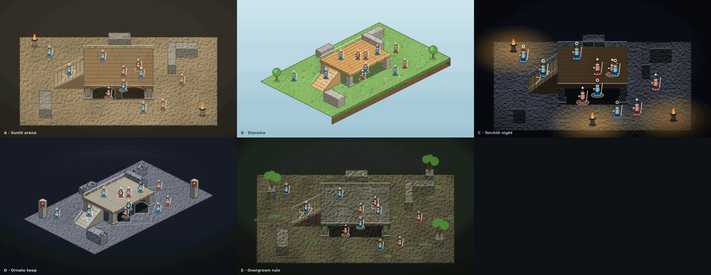
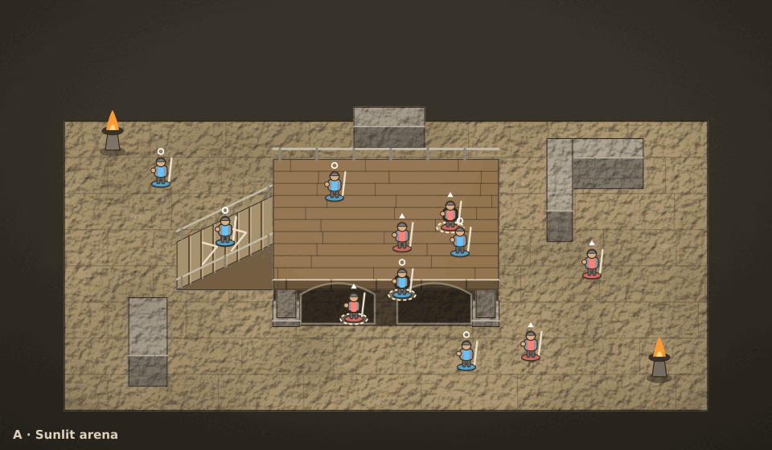
Play-size crop: ramp foot, deck edge and under-deck fighters at about on-screen body size.
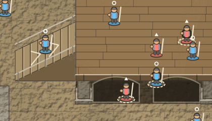
| Direction | Classic fantasy arena in daylight: sandstone flagstones, a timber bridge on stone piers with two arches, iron braziers. Warm, solid, familiar. |
|---|---|
| Atmosphere and elevation | Oblique view, lift 24 px per world unit (deck 2.4 units = 58 px), front face with plank-end beams and a dark underside band; arches and plinthed piers make the space below read as open. |
| Characters, bridges, walls and terrain | Lit bevelled stone and plank geometry over grain-and-relief filters; walls have a lit top and masonry courses; the ramp is a wedge with cleats, rails and uphill chevrons. |
| Strengths | Dark arches contrast with the bright deck; brown deck on tan floor separates by value and by the lit lip. Under-deck fighters sit in shadow. |
| Readability risks | Tan ground, tan ramp and brown deck are close in hue; readability leans on the lip highlight and cleats. Under-deck fighters are found by a dashed ring and a pale halo. |
| What it implies for asset and rendering work | Lift 24 px (ELEVATION_STEP 28 units: matches the current renderer). Needs: seamless stone, plank and brick tiles, an arch/pier sprite set, brazier prop. Cheapest to build. |
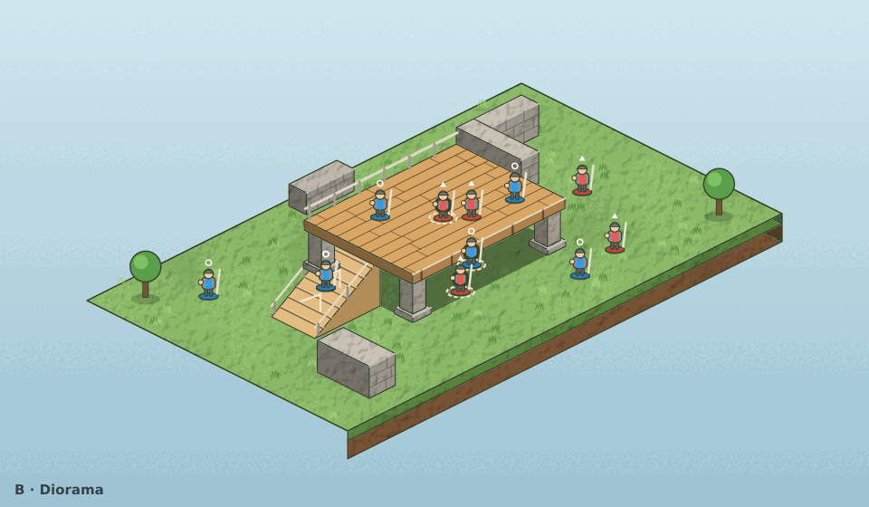
Play-size crop: ramp foot, deck edge and under-deck fighters at about on-screen body size.
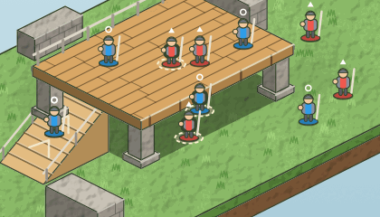
| Direction | Stylised cut-away diorama: the arena is a block of turf with an earth rim, bright and friendly, a toy-like chunky read. |
|---|---|
| Atmosphere and elevation | Isometric view, lift 22 px; the deck is a thick timber slab, soil layers show on the block sides, a stair-like ramp climbs the left face. |
| Characters, bridges, walls and terrain | Soft saturated materials, rounded trees as landmarks, thick outlines; short stone walls like building blocks. |
| Strengths | Very high value contrast between the green ground and the amber deck; the cut-away side makes the ground level unmistakable. |
| Readability risks | Lightest, least GW-like mood; isometric makes click picking and hidden characters harder, and the wide diamond wastes screen at the corners. |
| What it implies for asset and rendering work | Implies an isometric projection and a 2:1 ground diamond, i.e. a new renderer transform and picking. Needs turf, wood and stone tiles plus a soil rim. |
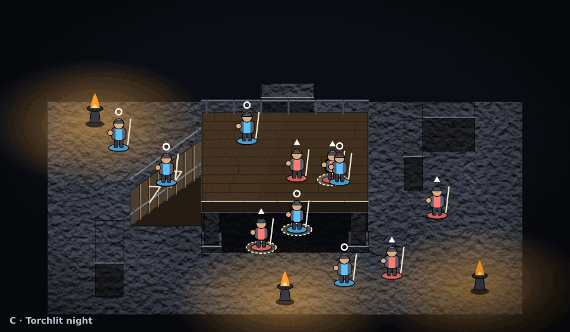
Play-size crop: ramp foot, deck edge and under-deck fighters at about on-screen body size.
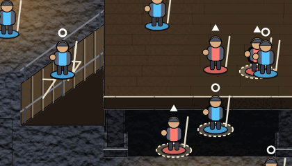
| Direction | Dark atmospheric battlefield: wet slate stone, scorched timber, warm pools of torchlight against a cold blue night. |
|---|---|
| Atmosphere and elevation | Oblique, tall lift of 36 px per unit (deck = 86 px) so the deck stands tall; the underside is almost black; light pools highlight the ground fights. |
| Characters, bridges, walls and terrain | Heavy relief on rough stone, dark timber, strong vignette; only braziers and characters are bright. |
| Strengths | The deck reads by its warm tone against cold floor; the dark underside makes the open space below unmistakable. |
| Readability risks | Darkest option: low-contrast terrain can swallow bodies outside the torch pools; needs the lowest texture contrast and a minimum ambient light. Foe red on dark floor is the weakest pair. |
| What it implies for asset and rendering work | Needs a lift of 36 px (larger than ELEVATION_STEP maps to today), a torch-light overlay pass and a vignette. Static layer cacheable, light pools are cheap radial sprites. |
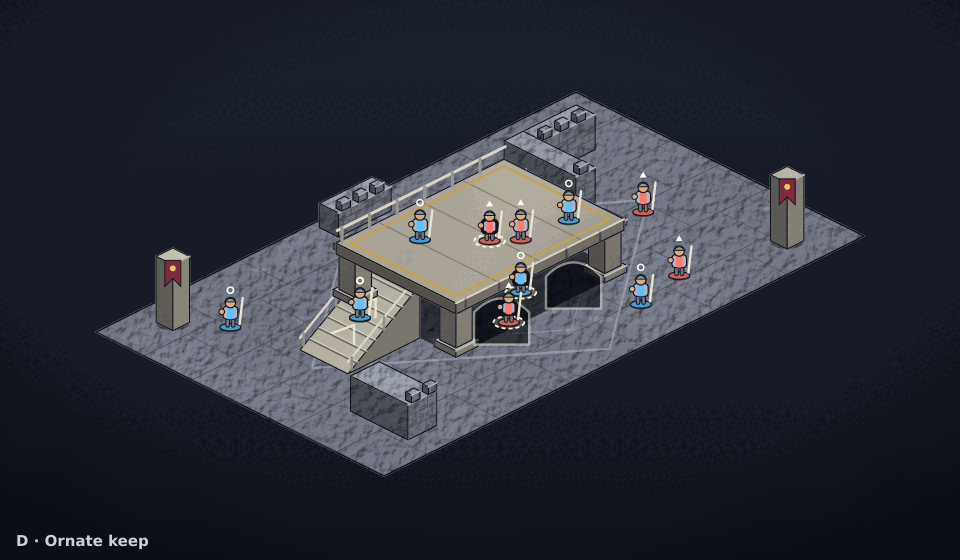
Play-size crop: ramp foot, deck edge and under-deck fighters at about on-screen body size.
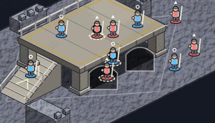
| Direction | Ornate fortifications: pale marble and cut stone, crenellated walls, gold-trimmed deck, banners. Formal, grand, symmetrical. |
|---|---|
| Atmosphere and elevation | Isometric, lift 22 px; deck of polished marble with gold inlay rail, crenellated walls with height, columns with plinth and capital, arches under the deck. |
| Characters, bridges, walls and terrain | Carved geometry and inlay lines over a marble veining filter; banners and gold accents mark teams' sides without using team colours. |
| Strengths | Pale deck on dark floor is the strongest layer contrast of all five; the arches and columns show structure clearly. |
| Readability risks | Banner red near the foe red can confuse team reading; the pale marble can glare, so the HUD ground effects need a darker edge. Isometric picking cost as in B. |
| What it implies for asset and rendering work | Isometric projection. Heaviest asset list: marble, cut stone, crenellation, column, banner, inlay. Most to author, highest payoff for variety. |
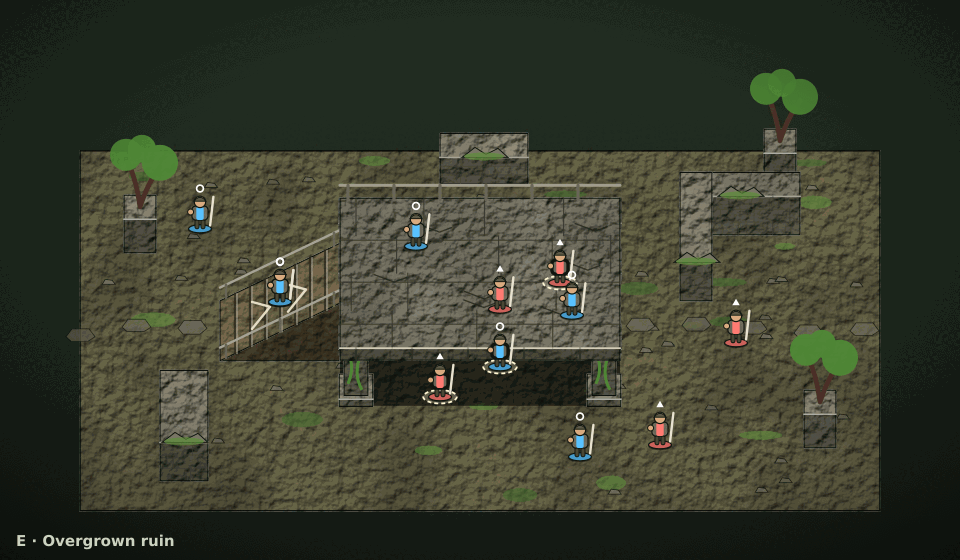
Play-size crop: ramp foot, deck edge and under-deck fighters at about on-screen body size.
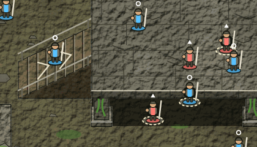
| Direction | Weathered ruin reclaimed by nature: cracked slabs, a broken road, moss, roots and old trees growing through columns. |
|---|---|
| Atmosphere and elevation | Oblique, lift 24 px; the deck is a heavy cracked slab on moss-grown piers, an earth ramp climbs to it; walls are broken at the top. |
| Characters, bridges, walls and terrain | Strong rough relief on stone and earth, patches of moss and grass, fallen rubble; trees are tall landmarks. |
| Strengths | The slab reads by its grey stone against olive-brown earth; the moss-streaked piers show open space beneath. |
| Readability risks | Busiest ground: rubble and moss compete with bodies unless texture contrast stays low. Green moss and the friend blue are far apart, but grass tufts near the foes can hide small bodies. |
| What it implies for asset and rendering work | Lift 24 px, oblique like A. Needs earth, cracked stone, moss decal and rubble sets and tree props; random decals must be placed by map data, not randomly, to stay deterministic. |
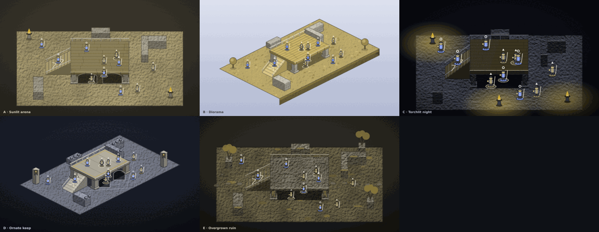
Team shapes (ring, triangle) carry the read; layers separate by value.